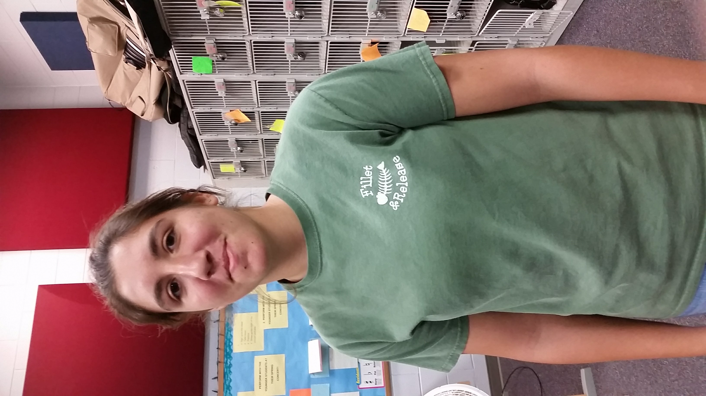

A small group of instruments—traditionally a group that could fit in a palace chamber or a large room. An orchestra is a large instrumental ensemble typical of classical music, which mixes instruments from different families, including
Mr. Murray |
The lead or primary violin role in an orchestra or other ensemble, or in a musical composition, that typically contains the melody and is often more technically demanding than the second violin role.
Brandon Blair |
||
Madeline Peloquin |
||
Rocco DeCioccio |
||
Brian Trinh |
The second violin part in an orchestral score, generally a harmony to the first violin's melody and generally less technically demanding.
McKenzie Hester |
||
Nina Gaffney |
||
Zane Padgett |
 |
|
Zane Daniels |
||
Alex Zawadazki |
||
Mae Mattes |
 |
They provide the bridge between D-Bass and Celli and the violins and are used to fill in the harmony.
Noelle Turner |
||
Cameron Phillips |
||
Karalee Chace |
The cello has a range lower than that of the violin and the viola, and of all the string instruments, the cello is the one that sounds most like the human voice.
Marty Jones |
||
Nolan Fatu |
The bass is the largest string instrument in the orchestra and with its warm, deep tones it is often thought of as the supporting the rest of the orchestra.
Philip Laven |
||
Jayden Hanbury |
The Music Performance Assessment (MPA) is one of the best ways to raise the standards of musicianship in Middle School and High School orchestras around the State of Florida. The Florida Orchestra Association, Incorporated along with the Florida School Music Association provides Music Performance Assessment opportunities in which the students can hear other orchestras, receive constructive comments and be rewarded for their accomplishments and efforts. It is the belief of the Florida Orchestra Association, Incorporated that our growth as individuals is defined in terms of our ability to develop thinking capacities, motor skills, and affective responses. Music is unique in that it has the potential to develop people in all three areas, fostering performance skills, musical creativity and musical response.
There are multiple grades one can receive for your performance, from best to worst:
The Cocoa Beach Jr/Sr High School Chamber Orchestra recieved an over-all Superior on their performance.
Music USA Festivals provides an opportunity for students to perform musical selections in a relaxed, yet competitive environment. This allows students to improve their musical skills through comments made by quality adjudicators.
Their primary music festival takes place at Universal Orlando Resort™ in Orlando, Florida. Festivals in other destinations are also available.
The Cocoa Beach Jr/Sr High School Chamber Orchestra received 2nd place against other school around the country.